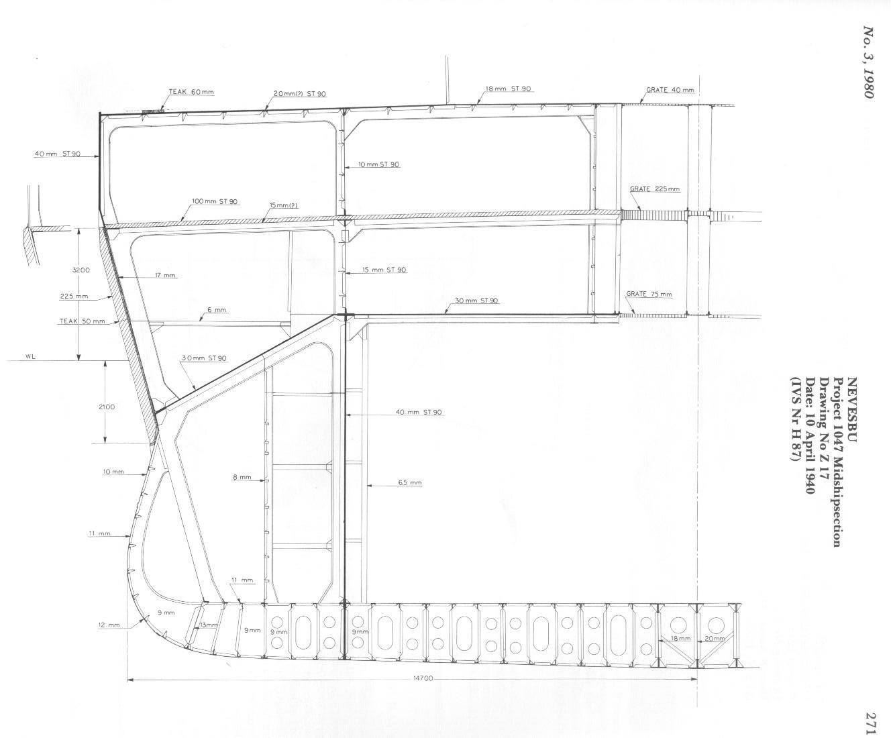

Slagkruiser Ontwerp 1047
| Naam | Slagkruiser Ontwerp 11 juli 1939 |
|---|---|
| Foto |  |
| Datum ontwerp | 11 juli 1939 |
| Aantal schepen in klasse | 2 of 3 |
| Waterverplaatsing | 27916 ton |
| Snelheid | 33 knopen |
| Bemanning | Niet in plannen opgenomen |
| Afmetingen | 230m x 29,7m x 7,5m |
| Bewapening | 9x 28cm (3x3) 8x 12cm (4x2) 14x 40mm (7x2) |
| Vliegtuigen | 2x Katapult 2x Watervliegtuig |
| In dienst | Verder onderzoek vereist |
Deze plannen zien er eerder uit als plannen van voor de Eerste Wereldoorlog dan plannen uit 1939, daarom vragen de Nederlanders hulp aan de Duitsers door hen de plannen van de 'Scharnhorst'-klasse slagschepen te vragen. In ruil daarvoor zouden alle systemen/bewapening in Duitsland besteld worden. De Duitsers zijn geïnteresseerd maar geven niet zomaar het ontwerp van hun schepen prijs, wel sturen ze op 21 augustus 1939 plannen voor de Koninklijke Marine op.
| Naam | Holland-Schlachtschiff 21 juli 1939 |
|---|---|
| Foto |  |
| Datum ontwerp | 21 juli 1939 |
| Aantal schepen in klasse | 2 of 3 |
| Waterverplaatsing | 29500 ton |
| Snelheid | 33 knopen |
| Bemanning | Niet in plannen opgenomen |
| Afmetingen | 227m x 30m x 8m |
| Bewapening | 9x 28cm (3x3) 8x 12cm (4x2) 16x 40mm (8x2) |
| Vliegtuigen | 1x Katapult 1x Watervliegtuig |
| In dienst | Verder onderzoek vereist |
| Naam | I.v.S. Project 323 november 1939 |
|---|---|
| Foto | |
| Datum ontwerp | mid-november 1939 |
| Aantal schepen in klasse | 2 of 3 |
| Waterverplaatsing | 29815 ton |
| Snelheid | 34 knopen |
| Bemanning | Niet in plannen opgenomen |
| Afmetingen | 238m x 29m x 8,4m |
| Bewapening | 9x 28cm/50 (3x3) 8x 12cm/53 (4x2) 16x 40mm (8x2) 16x 13mm (8x2) |
| Vliegtuigen | 1x Katapult 3x Watervliegtuig |
| In dienst | Verder onderzoek vereist |
| Naam | Gepanserde Kruiser december 1939 |
|---|---|
| Foto | |
| Datum ontwerp | december 1939 |
| Aantal schepen in klasse | 2 of 3 |
| Waterverplaatsing | 16000 ton |
| Snelheid | 29 knopen |
| Bemanning | Niet in plannen opgenomen |
| Afmetingen | 200m x 25m x 12m |
| Bewapening | 9x 24cm (3x3) 4x 12cm (2x2) 8x 40mm (4x2) |
| Vliegtuigen | Niet in plannen opgenomen |
| In dienst | Verder onderzoek vereist |
| Naam | Project 1047 februari 1940 |
|---|---|
| Foto |  |
| Datum ontwerp | februari 1940 |
| Aantal schepen in klasse | 2 of 3 |
| Waterverplaatsing | 28316 ton |
| Snelheid | 34 knopen |
| Bemanning | Niet in plannen opgenomen |
| Afmetingen | 237m x 30,4m x 7,8m |
| Bewapening | 9x 28cm (3x3) 12x 12cm (6x2) 14x 40mm (7x2) 8x 20mm (8x1) |
| Vliegtuigen | Niet in plannen opgenomen |
| In dienst | ~1944 |
| Naam | Project 1047 19 april 1940 |
|---|---|
| Foto |  |
| Datum ontwerp | 19 april 1940 |
| Aantal schepen in klasse | 3 |
| Waterverplaatsing | 27988 ton |
| Snelheid | 34 knopen |
| Bemanning | Niet in plannen opgenomen |
| Afmetingen | 236m x 29,4m x 7,8m |
| Bewapening | 9x 28cm (3x3) 12x 12cm (6x2) 14x 40mm (7x2) 8x 20mm (8x1) |
| Vliegtuigen | Niet in plannen opgenomen |
| In dienst | Gepland: 1 februari 1944 1 juli 1944 1 december 1944 |